News & humour
What’s new from Dr. J.D. Smith, our client newsletters, and a little something to make you smile.
What’s new
Stories, videos and safety tips J.D. has collected for our clients over the years. Open one up: each has its own look.
On the road
Before the snow flies…
Our friends at Hagerty, the classic car insurance people, put together five simple steps that keep a vintage car happy over a long winter nap.
This video has been taken down from YouTube, so we can’t show it any more. We’re keeping the channel open for the next one.
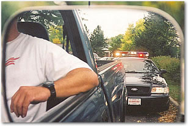
A quick check of the rear-view mirror and all you see are flashing lights. Oh oh… here it goes… Your heart races and sweat forms on your brow as the realization sinks in. You were speeding and this time it could be expensive. Just as your foot reaches for the brake pedal, the police officer pulls out and accelerates past. His target is someone else today, but next time it could be you. And this will increase your insurance rates after 2 tickets. Think ahead… be careful… there is no rush. But here are a few ideas.
We all have faced this situation at least once in our lifetime. Convinced we are not at fault, the relief of not being pulled over is as equally heart stopping as the realization we were guilty. Here are several tips to help you stay on the good side of the law.
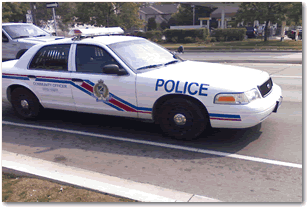
If you are stopped by the police, pulling off to the side safely and as soon as possible are sure ways to let the officer know you respect their authority. Pretending you didn’t notice them in your rear-view mirror and extending the “chase” is never a good idea. Provide enough space for the police officer to approach your vehicle without the need for concern of oncoming traffic. Turn on your four-way flashers as a further means of creating a safe environment.
Relax and allow time for the officer to approach your vehicle. They may be checking your licence plate, so don’t make any sudden or strange moves by trying to locate your insurance and registration. Roll down your window and remove any sunglasses you may be wearing. Rest your hands on the steering wheel where they are easily seen. You may be surprised at the reaction you receive.
When addressing the officer, be polite and have your information close at hand. At night, turn on your interior lights as proof you have nothing to hide. Be honest. If the officer asks do you know why you are being pulled over, tell them yes, you were speeding. Whether it means the difference between getting a ticket or not is entirely up to them.
If you spend enough time driving a vehicle, a speeding ticket is probably in your future. Drive smart and be respectful of local authorities as they are simply trying to provide a safe environment in which to drive. Not speeding is still the best way to avoid a costly ticket and above all, drive safe!
This is an old Windows Media video (.wmv, 5.7 MB). Most browsers can’t play it, but you can download it and watch it in a media player.
Download the videoThe 3,150 m long Lefortovo tunnel in Russia is the longest in-city tunnel in all of Europe. It is nicknamed ‘The Tunnel of Death’. See for yourself why.
There is a river running over the tunnel and water leaks through in some areas. When the temperature reaches nearly 0°C, like it does during the winter in Russia, the road freezes and becomes extremely slippery. The result is the attached video which was taken during a single day with the tunnel surveillance camera.
Congratulations to the dual-carriage bus driver: imagine the passengers in the back! What a ride! The next time you complain about traffic, remember this video…!
An old Windows Media video (.wmv, 2 MB) that most browsers can’t play.
Download the videoWe offer the pictures below with the hope of encouraging people to consider the drastic consequences of speeding. It’s just not worth it. Please drive carefully, and responsibly.
New Ferrari for Dad: $1,000,000.00
Daughter borrows Dad’s new car to try it out…… and hits power pole at 200 MPH.
Click a photo to enlarge it
- Car loss?$1 Million bucks!
- Waiting list for a new one?2 years.
- When can daughter drive Dad’s car again?Next lifetime.
- When will kid not be grounded and see the light of day?Same day the polar ice caps melt.
- But she is still alive…Priceless!!!
- Car only had 9 miles on it!One mile of it was during the wreck.


We offer these pictures with the hope of encouraging people to consider the drastic consequences of speeding. Please drive carefully, and responsibly.
See all 14 pictures
Speed belongs on the track, not the streets. That’s why we sponsor a car racing team: race photos, reports and the story behind it are on their own page.
Meet our racing teamDo you drive in the Greater Toronto Area? Then you might be interested in knowing where the cameras are located.
Take a look for any intersections that may be on your path to or from work and take it easy. If it takes a picture of you in violation, you could get a $190.00 fine in the mail.
Peel — Just because there is an insurance card in your wallet does not mean that you have automobile insurance. Police and the auto insurance industry are concerned with the increased number of vehicles in the community with fraudulent insurance cards.
Insurance cards are the pink documents required by law that contain insurance particulars for vehicles, including policy numbers and policy expiry dates.
Fraudulent insurance cards appear valid, but have false policy numbers and/or expiry dates. Drivers using fraudulent cards are driving with no insurance and can face fines up to $5,000.00 and/or criminal charges. In addition, if involved in motor vehicle collisions, these drivers may find themselves civilly liable for costs related to the collision and any injuries.
In concert with the Insurance Bureau of Canada, the Registered Insurance Brokers of Ontario and the Insurance Brokers Association of Ontario, a recent week long series of spot-checks was conducted by the Peel Regional Police, focusing on this issue. Over 500 vehicles were investigated at various locations throughout the cities of Brampton and Mississauga. The checks resulted in 71 charges against drivers, of which 32 were insurance related offences and three fraudulent insurance cards were discovered.
Police note that drivers may not be aware that they have a fraudulent insurance card. Individuals with poor driving records and/or drivers with no Canadian driving history may find themselves facing high costs for car insurance. They may be approached by culprits trafficking in fraudulent insurance cards and offered car insurance at significantly reduced rates. The victims purchase what they believe is valid insurance, but which is in fact fraudulent.
Police are urging drivers to ensure the insurance they have for their vehicle is valid and up-to-date. If they have any concerns they should contact their respective insurance companies to verify they are documented as clients.
Members of the public with information on individuals creating fraudulent insurance documents are urged to contact police either directly or through Crime Stoppers at 1-800-222-TIPS. They may also contact the Insurance Crime Tip Line at 1-877-IBC-TIPS.
In partnership with the Insurance Bureau of Canada and the Registered Insurance Brokers of Ontario, police are actively addressing complaints of this nature.
Detective Sergeant John Betts
Fraud Bureau
Constable Craig Platt
Media Relations
Not sure your card is real? Call us at 905-764-7868 and we’ll check your policy with you.
‘Drive Clean’: Ontario’s new program
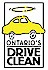
How does Drive Clean affect you?
Drive Clean is a testing and repair program starting in 1999 and is designed to cut smog-causing emissions from vehicles. Initially, the program will affect the Greater Toronto and Regional Municipality of Hamilton-Wentworth areas. Passing an emissions test every two years is a requirement for the renewal of vehicle licence plates, depending on where the vehicle is registered and its model year.
Program testing will include cars and light-duty trucks that are more than three, and less than 20 model years old. All such vehicles with even-number model years and a licence plate renewal date of April 1 or later will be required to pass the test in 1999. Vehicles with odd-number model years must be tested before their registration renewal in 2000.
The program is administered by the Ministry of the Environment and will be closely monitored to ensure that it is both fair and effective. With full implementation it will cut smog-causing pollutants from vehicles by up to 22% in the program areas.
Ontario ended Drive Clean testing for passenger cars and light trucks in 2019, so the old driveclean.com site and phone line are gone.
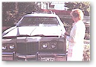
Drinking and driving is not only illegal, it is socially and morally irresponsible. Many Ontario drivers don’t realize they lose important insurance protection if they are convicted of a drinking and driving offence.
Please don’t drink and drive.
Read the full articleThe graduated licensing system was put in place to cut the risks new drivers face. Statistics show new drivers are more likely to get into automobile accidents, which are the leading cause of death for people between the ages of 16 and 24.
Read the full articlePrior to August 1998, if you had an accident involving a pleasure craft for which you were responsible, the size of the vessel dictated the amount for which you could be held legally liable. An amendment to the Canada Shipping Act raised the liability limits to $1 million in the event of death or personal injury, plus $500,000 for damage caused to someone else’s property, for a new total limit of $1,500,000.
While carrying insurance is not compulsory for those owning or operating a pleasure craft, the change in the law emphasizes the importance of carrying adequate liability insurance.
The age and horsepower rulesHome, safety & claims
This is an excellent MUST SEE video. Very, very short, but impacting! Read the short article first. Be safe and consider sharing with your friends and loved ones.
This is a dramatic video (30 seconds, very short) about how to deal with a common kitchen fire… oil in a frying pan. Read the following introduction, then watch the show… it’s a real eye-opener!!
At the fire fighting training school they would demonstrate this with a deep fat fryer set on the fire field. An instructor would don a fire suit and use an 8 oz cup at the end of a 10-foot pole to toss water onto the grease fire.
The results got the attention of the students. The water, being heavier than oil, sinks to the bottom where it instantly becomes superheated. The explosive force of the steam blows the burning oil up and out. On the open field, it became a thirty foot high fireball that resembled a nuclear blast.
Inside the confines of a kitchen, the fire ball hits the ceiling and fills the entire room. Also, do not throw sugar or flour on a grease fire. One cup of either creates the explosive force of two sticks of dynamite.
This is a powerful message: watch the video and don’t forget what you see. Tell your whole family about this video.
An old Windows Media video (.wmv, 1.5 MB) that most browsers can’t play.
Download the video“Of course I look familiar. I was here just last week cleaning your carpets, painting your shutters, or delivering your new refrigerator.”
“Here’s a helpful hint: I almost never go into kids’ rooms.”
All 21 tips are with our home insurance advice.
Read what your burglar won’t tell youImagine: You walk across the parking lot, unlock your car and get inside. Then you lock all your doors, start the engine and shift into REVERSE, and you look into the rear-view mirror to back out of your parking space and you notice a piece of paper stuck to the middle of the rear window. So, you shift into PARK, unlock your doors and jump out of your car to remove that paper (or whatever it is) that is obstructing your view. When you reach the back of your car, that is when the car-jackers appear out of nowhere, jump into your car and take off!! Your engine was running, you would have your purse in the car and they practically mow you down as they speed off in your car.
BE AWARE OF THIS NEW SCHEME THAT IS NOW BEING USED. Just drive away and remove the paper that is stuck to your window LATER, and be thankful that you read this. I hope you will alert friends and family especially to women! A purse contains all identification, and you certainly do NOT want someone getting your home address. They already HAVE your keys!!!!!
My brother and his wife learned a hard lesson this last week. Their house burned down… nothing left but ashes. They have good insurance, so the home will be replaced and most of the contents. That is the good news. However, they were sick when they found out the cause of the fire.
The insurance investigator sifted through the ashes for several hours. He had the cause of the fire traced to the master bathroom. He asked my sister-in-law what she had plugged in in the bathroom. She listed the normal things… curling iron, blow dryer. He kept saying to her, “No, this would be something that would disintegrate at high temperatures.”
Then, my sister-in-law remembered she had a plug-in air freshener in the bathroom. The investigator had one of those “Aha” moments. He said that was the cause of the fire.
He said he has seen more home fires started with the plug in type room fresheners than anything else. He said the plastic they are made from is a THIN plastic. He said in every case there was nothing left to prove that it even existed. When the investigator looked in the wall plug, the two prongs left from the plug-in were still in there.
My sister-in-law had one of the plug-ins that had a small night light built in it. She said she had noticed that the light would dim… and then finally go out. She would walk in a few hours later, and the light would be back on again. The investigator said that the unit was getting too hot, and would dim and go out rather than just blow the light bulb. Once it cooled down, it would come back on. That is a warning sign.
The investigator said he personally wouldn’t have any type of plug in fragrance device anywhere in his house. He has seen too many burned down homes. Something to be aware of.
These are forwarded emails, not our own findings. Whatever you plug in, use it as the label says and replace anything that runs hot or flickers.
Carbon monoxide is called the silent killer, and for good reason. This colourless, odourless and tasteless gas overcomes and kills hundreds of people each year. That’s why the installation of a carbon monoxide detector in your home is crucial.
Read the full article“Rebuilding in Goderich”
Economical Insurance’s story of the town rebuilding after the August 2011 tornado. Last seen on economicalinsurance.com, which no longer has the page.


The pick-up was travelling about 75 mph when it crashed through the guardrail, flipped end-over-end across the culvert and landed right-side-up. The driver and passenger walked away with minor cuts and bruises.
Read the storyIn 1980, an oil rig drilling in Lake Peigneur, Louisiana punched a 14-inch hole into the salt mine underneath. The lake drained into the mine, taking barges and the drilling rig with it. Talk about a claim!
An old Windows Media video (.wmv, 5.8 MB) that most browsers can’t play.
Download the videoOur credit card fraud article from the client newsletter covers how to protect your cards and what to do if one goes missing.
Read about credit card fraud
“The moral is: be careful, and have a good, reputable insurance company.”
J.D.’s article on choosing your car, your driving habits and cutting your premium.
Read Drive safe and saveCBC News: “Grand Theft Auto”
About car thieves who don’t break into the car, they just ask for the keys. Last seen on cbc.ca, which has since taken the story down.
Car theft tips that still work: how thieves steal cars, and how to stop them.
Wonders & curiosities
A New York man retired. He wanted to use his retirement money wisely, so it would last, and decided to buy a home and a few acres in Portugal.
The modest farmhouse had been vacant for 15 years; the owner and wife both had died, and there were no heirs. The house was sold to pay taxes.
There had been several lookers, but the large barn had steel doors, and they had been welded shut. Nobody wanted to go to the extra expense to see what was in the barn, and it wasn’t complimentary to the property anyway… so, nobody made an offer on the place.
The New York guy bought it at just over half of the property’s worth, moved in, and set about to tear into the barn… curiosity was killing him. So, he and his wife bought a generator, and a couple of grinders… and cut through the welds.
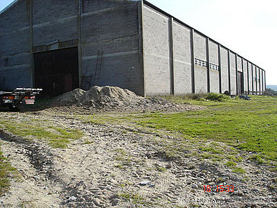
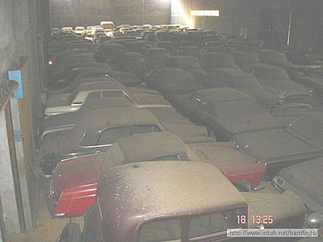
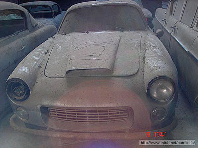
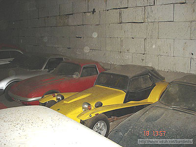
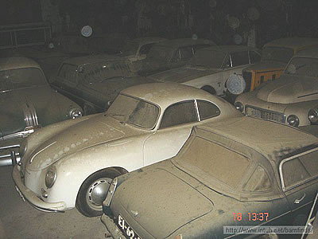
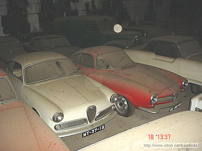
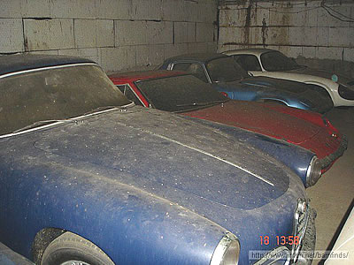
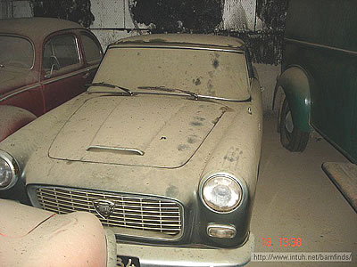
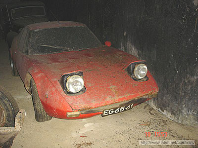
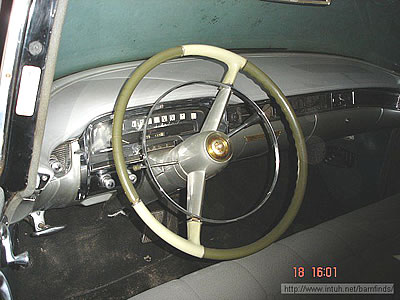
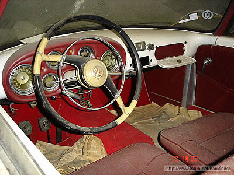
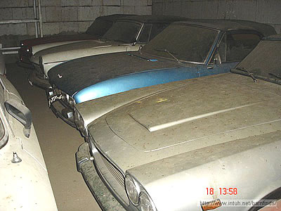
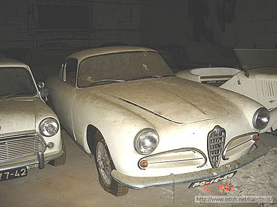
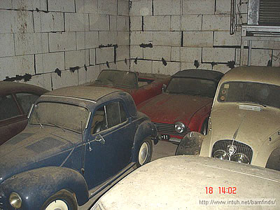
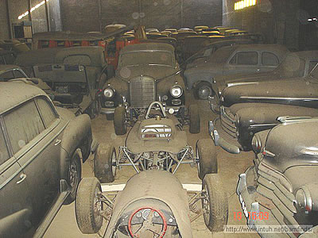
The man and his wife had full claim to the lot. They had a great retirement!
Got a collection of your own? Classic cars need classic car insurance. Ask your broker.
Davis-Monthan Air Force Base · Tucson, Arizona
Remember: each one of these babies had a multimillion dollar price tag!
The 3rd largest Air Force in the world is sitting on the ground here.
“Outrageous Celebrity Homes”
A Yahoo! TV blog post. Last seen on ca.tv.yahoo.com, which Yahoo has since closed.
An old Windows Media video (.wmv, 2.5 MB) that most browsers can’t play.
Download the videoAn old Windows Media video (.wmv, 5.8 MB) that most browsers can’t play.
Download the videoStories to lift you up
A blind boy sat on the steps of a building with a hat by his feet. He held up a sign which said:
There were only a few coins in the hat.
A man was walking by. He took a few coins from his pocket and dropped them into the hat. He then took the sign, turned it around, and wrote some words. He put the sign back so that everyone who walked by would see the new words.
Soon the hat began to fill up. A lot more people were giving money to the blind boy.
That afternoon the man who had changed the sign came to see how things were. The boy recognized his footsteps and asked, “Were you the one who changed my sign this morning? What did you write?”
The man said, “I only wrote the truth. I said what you said but in a different way.” I wrote:
Both signs told people that the boy was blind. But the first sign simply said the boy was blind. The second sign told people that they were so lucky that they were not blind. Should we be surprised that the second sign was more effective?
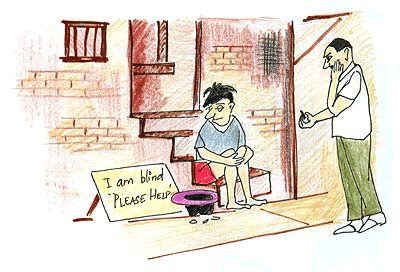
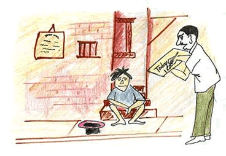
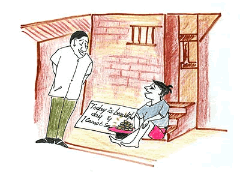
Moral of the story: Be thankful for what you have. Be creative. Be innovative. Think differently and positively. When life gives you a 100 reasons to cry, show life that you have 1000 reasons to smile.
Face your past without regret. Handle your present with confidence. Prepare for the future without fear. Keep the faith and drop the fear.
The most beautiful thing is to see a person smiling. And even more beautiful, is knowing that you are the reason behind it!!!
You may touch someone’s heart today and forever.
J D Smith
An old Windows Media video (.wmv, 2.8 MB) that most browsers can’t play.
Download the videoThe members of this band are cousins. They are all under 12, except for the boy playing the piano forte, who is 15.
The little girl playing the cymbals is only three!
An old Windows Media video (.wmv, 3.8 MB) that most browsers can’t play.
Download the video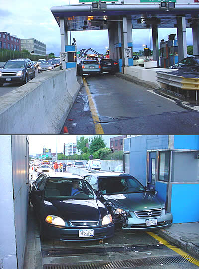
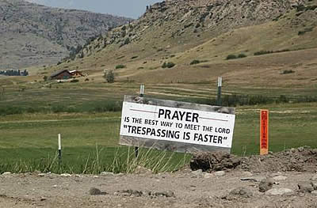
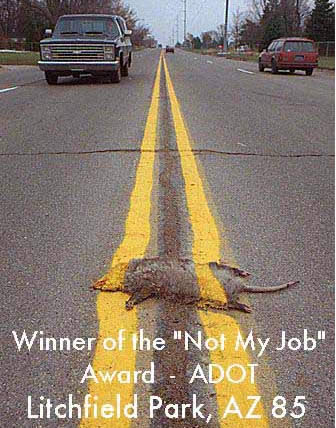
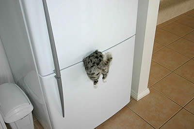
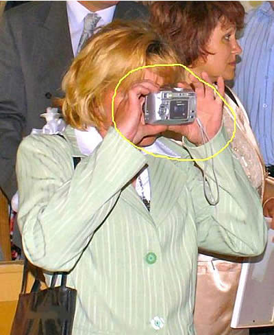
We at JD Smith hope you have a great Christmas and enjoy the time of rest, turkey, presents and peace and good will brought by God’s gift to the world, in the person of Christ.
- Have a great New Year. Here is the history behind Jan. 1
- “Winter is here” and “The children of our employees had fun lighting this tree”: these two e-cards have expired, so they can’t be sent any more.
JD Smith, B.A., President
In Touch
The newsletter we send to our clients, with advice on your car, your home and your business. Every issue is here, newest first.
The live site’s “Review new 2016 auto AB changes” letter is now our accident benefits page. Auto policies in Ontario changed again in July 2026, so start with what’s changing.
This issue opens as a PDF, exactly as we mailed it.
This issue opens as a PDF, exactly as we mailed it.
This issue opens as a PDF, exactly as we mailed it.
This issue opens as a PDF, exactly as we mailed it.
This issue opens as a PDF, exactly as we mailed it.
This issue opens as a PDF, exactly as we mailed it.
Today’s smile
Puns, signs, photos and the occasional letter to the government. Pick one, open it up, and enjoy.
Keep smiling!
What a guy’s garage should look like
Then there is this one, which is more along the lines of what most garages look like…
This video has been taken down from YouTube, so we can’t show it any more.
Einstein, the talking parrot
Answers to “Einstein”. Very chatty. Last seen streaming on Pet Star in 2005. The video stream has since been switched off.
“Do You Remember These?”
A nostalgic page from oldfortyfives.com. Fittingly, the site itself is now just a memory.
This is an actual letter sent to a man named Ryan DeVries regarding a pond on his property. It was sent by the Pennsylvania Department of Environmental Quality. This guy’s response is hilarious, but read the State’s letter before you get to the response letter.
SUBJECT: DEQ File No. 97-59-0023; T11N; R10W, Sec. 20; Lycoming County
Dear Mr. DeVries:
It has come to the attention of the Department of Environmental Quality that there has been recent unauthorized activity on the above referenced parcel of property. You have been certified as the legal landowner and/or contractor who did the following unauthorized activity: Construction and maintenance of two wood debris dams across the outlet stream of Spring Pond.
A permit must be issued prior to the start of this type of activity. A review of the Department’s files shows that no permits have been issued. Therefore, the Department has determined that this activity is in violation of Part 301, Inland Lakes and Streams, of the Natural Resource and Environmental Protection Act, Act 451 of the Public Acts of 1994, being sections 324.30101 to 324.30113 of the Pennsylvania Compiled Laws, annotated.
The Department has been informed that one or both of the dams partially failed during a recent rain event, causing debris and flooding at downstream locations. We find that dams of this nature are inherently hazardous and cannot be permitted.
The Department therefore orders you to cease and desist all activities at this location, and to restore the stream to a free-flow condition by removing all wood and brush forming the dams from the stream channel. All restoration work shall be completed no later than January 31, 2008.
Please notify this office when the restoration has been completed so that a follow-up site inspection may be scheduled by our staff. Failure to comply with this request or any further unauthorized activity on the site may result in this case being referred for elevated enforcement action. We anticipate and would appreciate your full cooperation in this matter. Please feel free to contact me at this office if you have any questions.
Sincerely,
David L. Price
District Representative and Water Management Division.
Here is the actual response sent back by Mr. DeVries…
Re: DEQ File No. 97-59-0023; T11N; R10W, Sec. 20; Lycoming County
Dear Mr. Price,
Your certified letter dated 11/25/07 has been handed to me to respond to. I am the legal landowner but not the Contractor at 2088 Dagget Lane, Trout Run, Pennsylvania.
A couple of beavers are in the (State unauthorized) process of constructing and maintaining two wood ‘debris’ dams across the outlet stream of my Spring Pond. While I did not pay for, authorize, nor supervise their dam project, I think they would be highly offended that you call their skillful use of nature’s building materials ‘debris.’
I would like to challenge your department to attempt to emulate their dam project any time and/or any place you choose. I believe I can safely state there is no way you could ever match their dam skills, their dam resourcefulness, their dam ingenuity, their dam persistence, their dam determination and/or their dam work ethic.
These are the beavers/contractors you are seeking. As to your request, I do not think the beavers are aware that they must first fill out a dam permit prior to the start of this type of dam activity.
My first dam question to you is: (1) Are you trying to discriminate against my Spring Pond Beavers, or (2) do you require all beavers throughout this State to conform to said dam request? If you are not discriminating against these particular beavers, through the Freedom of Information Act, I request completed copies of all those other applicable beaver dam permits that have been issued. (Perhaps we will see if there really is a dam violation of Part 301, Inland Lakes and Streams, of the Natural Resource and Environmental Protection Act, Act 451 of the Public Acts of 1994, being sections 324.30101 to 324.30113 of the Pennsylvania Compiled Laws, annotated.)
I have several concerns. My first concern is, aren’t the beavers entitled to legal representation? The Spring Pond Beavers are financially destitute and are unable to pay for said representation, so the State will have to provide them with a dam lawyer. The Department’s dam concern that either one or both of the dams failed during a recent rain event, causing flooding, is proof that this is a natural occurrence, which the Department is required to protect. In other words, we should leave the Spring Pond Beavers alone rather than harassing them and calling them dam names.
If you want the stream ‘restored’ to a dam free-flow condition please contact the beavers, but if you are going to arrest them, they obviously did not pay any attention to your dam letter, they being unable to read English.
In my humble opinion, the Spring Pond Beavers have a right to build their unauthorized dams as long as the sky is blue, the grass is green and water flows downstream. They have more dam rights than I do to live and enjoy Spring Pond. If the Department of Natural Resources and Environmental Protection lives up to its name, it should protect the natural resources (Beavers) and the environment (Beavers’ Dams).
So, as far as the beavers and I are concerned, this dam case can be referred for more elevated enforcement action right now. Why wait until 1/31/2008? The Spring Pond Beavers may be under the dam ice then and there will be no way for you or your dam staff to contact/harass them.
In conclusion, I would like to bring to your attention a real environmental quality, health, problem in the area. It is the bears! Bears are actually defecating in our woods. I definitely believe you should be persecuting the defecating bears and leave the beavers alone. If you are going to investigate the beaver dam, watch your step! The bears are not careful where they dump!
Being unable to comply with your dam request, and being unable to contact you on your dam answering machine, I am sending this response to your dam office.
THANK YOU,
Ryan DeVries
& the Dam Beavers
(PS: Isn’t it sad what the “politically correct” movement has done to the Common Sense that we Americans once enjoyed without governmental malarkey.)
An old Windows Media video (.wmv, 4.6 MB) that most browsers can’t play.
Download the videoLove him or hate him, he sure hits the nail on the head with this!
Supposedly, Bill Gates gave a speech at a high school about 11 things they did not, and will not, learn in school. He talks about how feel-good, politically correct teachings created a generation of kids with no concept of reality and how this concept set them up for failure in the real world.
Regardless of the source, this should be posted in all schools and work places.
- Rule #1:Life is not fair – get used to it!
- Rule #2:The world won’t care about your self-esteem. The world will expect you to accomplish something BEFORE you feel good about yourself.
- Rule #3:You will NOT make $60,000 a year right out of high school. You won’t be a vice-president with a car phone until you earn both.
- Rule #4:If you think your teacher is tough, wait till you get a boss.
- Rule #5:Flipping burgers is not beneath your dignity. Your grandparents had a different word for burger flipping: they called it opportunity.
- Rule #6:If you mess up, it’s not your parents’ fault, so don’t whine about your mistakes, learn from them.
- Rule #7:Before you were born, your parents weren’t as boring as they are now. They got that way from paying your bills, cleaning your clothes and listening to you talk about how cool you thought you were. So before you save the rain forest from the parasites of your parents’ generation, try delousing the closet in your own room.
- Rule #8:Your school may have done away with winners and losers, but life HAS NOT. In some schools, they have abolished failing grades and they’ll give you as MANY TIMES as you want to get the right answer. This doesn’t bear the slightest resemblance to ANYTHING in real life.
- Rule #9:Life is not divided into semesters. You don’t get summers off and very few employers are interested in helping you FIND YOURSELF. Do that on your own time.
- Rule #10:Television is NOT real life. In real life people actually have to leave the coffee shop and go to jobs.
- Rule #11:Be nice to nerds. Chances are you’ll end up working for one.
If you agree, pass it on.
If you can read this, thank a teacher! If you can read this in English, thank a soldier!!
A friend is someone we turn to
When our spirits need a lift
A friend is someone we treasure
For our friendship is a gift
A friend is someone who fills our lives
With beauty, joy, and grace
And makes the world we live in
A better and happier place
There is a miracle called friendship, that dwells in the heart.
You do not know how it happens or when it gets its start.
But you know the special lift it always brings.
You realize that friendship is God’s most precious gift!
Let old friends know you haven’t forgotten them, and tell new friends you never will. Remember, everyone needs a friend; someday you might feel like you have NO FRIENDS at all, just remember this page and take comfort in knowing somebody out there cares about you and always will…
Keep Smiling
Just try this. It is from an orthopedic surgeon.
This will boggle your mind and you will keep trying over and over again to see if you can outsmart your foot, but you can’t. It’s preprogrammed in your brain!
And there’s nothing you can do about it!
The following are actual statements found on insurance forms where car drivers attempted to summarize the details of an accident in the fewest words possible.
“Coming home I drove into the wrong house colliding with a tree I don’t have.”
“The other car collided with mine without giving warning of his intentions.”
“I thought my window was down, but I found out it was up when I put my head through it.”
“I collided with a stationary truck coming the other way.”
“A truck backed through my windshield into my wife’s face.”
“The guy was all over the road. I had to swerve a number of times before I hit him.”
“I pulled away from the side of the road, glanced at my mother-in-law, and headed over the embankment.”
“I had been shopping all day for plants and was on my way home. As I reached an intersection, a hedge sprang up, obscuring my vision and I didn’t see the other car.”
“I had been driving for 40 years when I fell asleep at the wheel and had an accident.”
“I was on my way to the doctor with rear end trouble when my universal joint gave way causing me to have an accident.”
“As I approached the intersection, a sign suddenly appeared in a place where no sign had ever appeared before. I was unable to stop in time to avoid the accident.”
“To avoid hitting the bumper of the car in front, I struck the pedestrian.”
“My car was legally parked as it backed into the other vehicle.”
“An invisible car came out of nowhere, struck my car and vanished.”
“I told the police I was not injured but on removing my hat, found that I had a fractured skull.”
“I was sure the old fellow would never make it to the other side of the road when I struck him.”
“The pedestrian had no idea which direction to run, so I ran over him.”
“I saw a slow moving, sad faced old gentleman, as he bounced off the hood of my car.”
“The indirect cause of the accident was a little guy in a small car with a big mouth.”
“I was thrown from my car as it left the road. I was later found in a ditch by some stray cow.”
“The telephone pole was approaching. I was attempting to swerve out of its way, when it struck my front end.”
For those who are fortunate enough to have jobs, there seems to be this desire by some to constantly complain about the job that they have. Well, next time you get that urge to complain, stop and think for a moment about whether you would rather have the jobs performed by the people in the pictures below.
Click a picture to enlarge it
The Senior Shopper
Last seen wandering the aisles of our old website. If you find it, please return it to the front desk: we’d love a copy.
- Adult
- A person who has stopped growing at both ends and is now growing in the middle.
- Beauty parlor
- A place where women curl up and dye.
- Cannibal
- Someone who is fed up with people.
- Chickens
- The only animals you eat before they are born and after they are dead.
- Committee
- A body that keeps minutes and wastes hours.
- Dust
- Mud with the juice squeezed out.
- Egotist
- Someone who is usually me-deep in conversation.
- Handkerchief
- Cold storage.
- Inflation
- Cutting money in half without damaging the paper.
- Mosquito
- An insect that makes you like flies better.
- Raisin
- Grape with sunburn.
- Secret
- Something you tell to one person at a time.
- Toothache
- The pain that drives you to extraction.
- Tomorrow
- One of the greatest labor saving devices of today.
- Yawn
- An honest opinion openly expressed.
- Wrinkles
- Something other people have. You have character lines.
Something here make you think about your own coverage?
Our licensed brokers are happy to talk it through, whether it’s a winter tire question or a barn full of classic cars.
- Toll free 1-800-917-7283
- Local 905-764-7868
- Fax 905-764-9618
- Mon–Thu 9:00–4:00, Fri 9:00–3:00